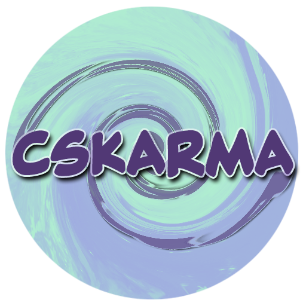
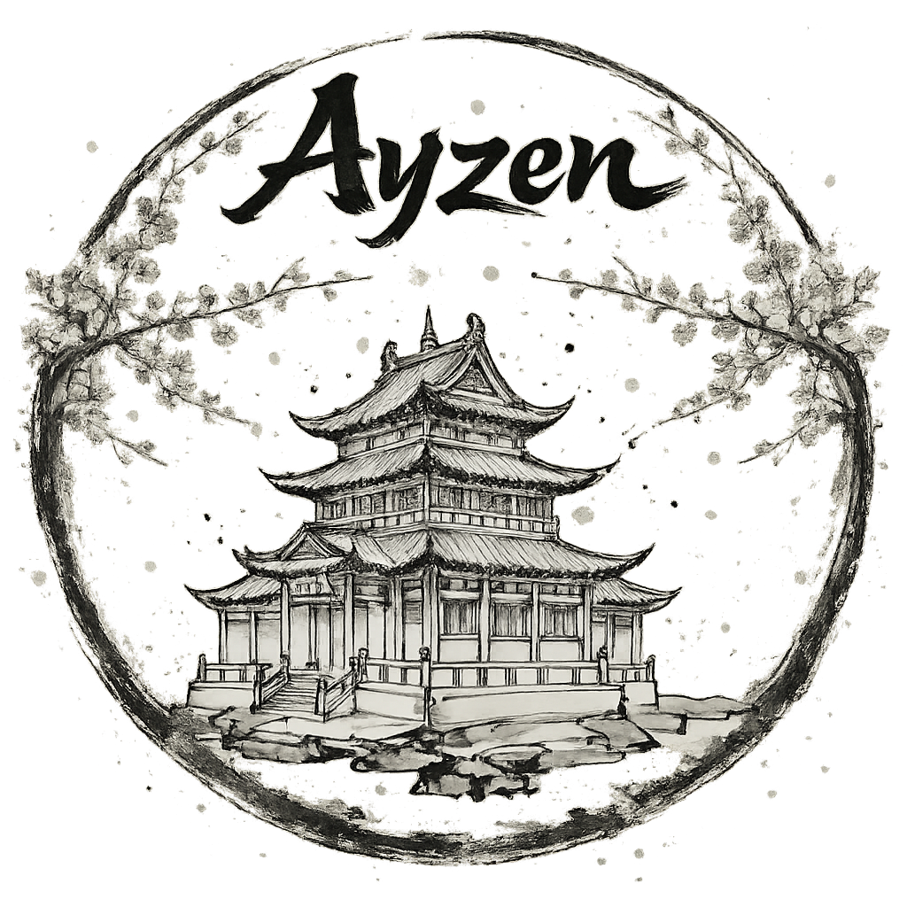

Diğer Repolar
Cs-Kraptor harici, farklı ihtiyaçlara ve topluluk isteklerine yönelik geliştirilen diğer resmi repolarımız aşağıdadır.
🧩 Cs-Karma
Cs-Kraptor ana repomuza uygun görmediğimiz deneysel eklentiler ve yabancı dildeki içerik talepleri için oluşturulmuş karma bir havuzdur.
- Kısa Kod:
cskarma - Kapsam: Deneysel ve Karma eklentiler.

🔞 Gizli-Keyif
Yetişkinlere özel (+18) içerik sağlayan eklentilerin barındığı özel repomuzdur.
- Kısa Kod:
gizlikeyif - Önemli Not: Eğer eklentiler listede boş görünüyorsa, uygulamadaki NSFW kısıtlamalarını kaldırmanız gerekir. Detaylar için Dil ve NSFW Ayarları sayfasına göz atın.
🛠️ Ayzen Repo
ByAyzen tarafından geliştirilen, topluluktan bağımsız ve keyfi eklentileri içeren kişisel/özel bir repodur.
- Kısa Kod:
AyzenCS3 - Rehber: Repo Hakkında Bilgilendirme

Bilgi
Yukarıdaki kısa kodları CloudStream uygulamasındaki "Eklenti Depoları" kısmına yazarak hızlıca kurulum yapabilirsiniz.